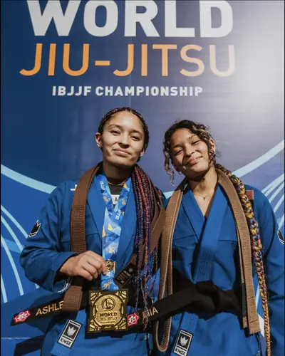
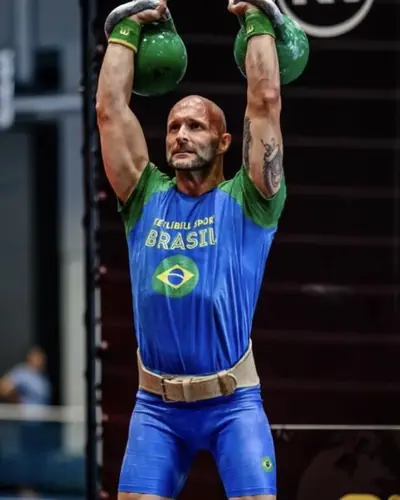
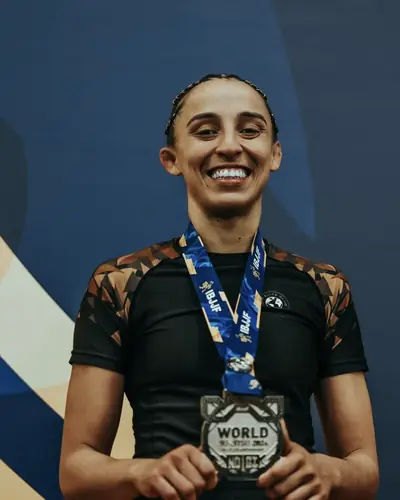
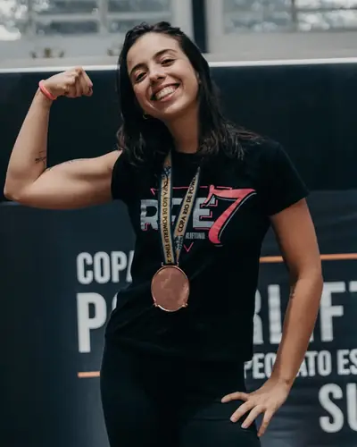
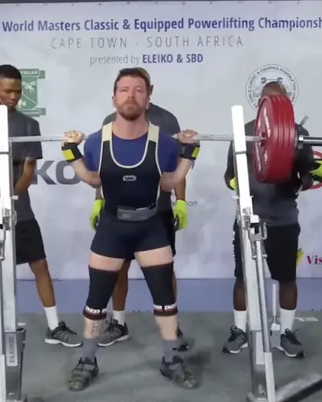
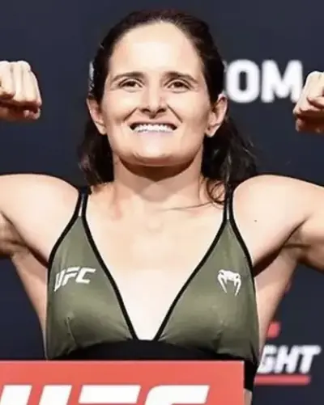
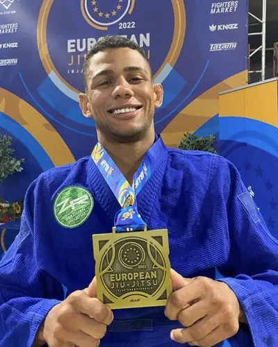
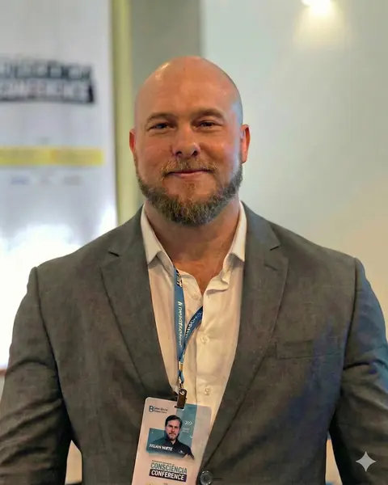

1 mês · Para quem quer clareza
Diagnóstico
Descubra onde está o erro e saia com um plano claro. Ideal para quem quer um ponto de partida honesto.
- Consulta de 60–90 min para mapear sua rotina
- Revisão a cada 15 dias
- Plataforma Health Compass inclusa
Nutricionista · Online para todo o Brasil
Para quem tem entre 30 e 50 anos, agenda cheia e já cansou de começar de novo toda segunda-feira. Eu aplico a mesma ciência que uso com campeões mundiais à sua rotina real — e ajusto seu plano toda semana com base nos seus dados.
Respondo pessoalmente, normalmente em até 2h (dias úteis). Sem compromisso.
Como funciona
Nada de formulário longo ou agenda engessada. Você me conta onde está travado e eu te digo, com honestidade, se consigo te ajudar.
A mensagem já vai pronta — é só completar com sua idade, seu objetivo e o que mais te atrapalha hoje.
Entendo sua rotina, seu histórico e seu objetivo. Se fizer sentido, te indico o formato de acompanhamento ideal. Se não fizer, eu te falo.
Consulta completa por vídeo, protocolo desenhado para a sua agenda e ajustes toda semana pela plataforma Health Compass — direto no WhatsApp.
Leva menos de 1 minuto.
Quem confia no método
A mesma precisão que eu uso onde poucos gramas decidem um título mundial — calibrada para a vida de quem trabalha 10 horas por dia.

Irmãs Funegra
Múltiplas campeãs mundiais IBJJF
Andréia Cavalcante
Nº 1 do mundo AJP

Christian Thier
Recordista Kettlebell Sport

Carol Vallejo
Campeã mundial IBJJF

Amanda Magalhães
Atleta de Powerlifting

André Garcia
Campeão mundial de Powerlifting

Lara Procopio
Atleta do UFC

Wilhiam Mateus
Atleta de Jiu-Jitsu
O método
Você já seguiu dieta, contratou personal, tomou suplemento — e voltou ao mesmo lugar. O problema nunca foi esforço. Foi seguir um plano que não cabia na sua vida.
Aqui você não recebe uma lista de alimentos e boa sorte. Você recebe um sistema que se ajusta a você toda semana. Não sou o consultor que aponta a direção e cruza os dedos — sou o guia que vai na frente.
"Comer bem" sem medir é chute. Você sai com metas claras, prazos realistas e cada decisão baseada nos seus números — não em achismo.
Toda semana, seus dados de sono, peso, energia e treino entram na plataforma Health Compass e eu ajusto o protocolo. Você não espera um mês para corrigir o rumo.
Eu não crio uma rotina nova para você — encaixo o protocolo no que você já faz: almoço fora, viagem, reunião que atrasa. Cuidar da saúde vira consequência do seu dia, não mais uma tarefa.
Energia baixa, sono ruim e recuperação lenta costumam ser sinais de uma fisiologia mal calibrada. Por isso olho também para sono, estresse e recuperação — não só para o prato.
Para quem é
"Se você tem entre 30 e 50 anos, trabalha muito, mal tem tempo de almoçar direito e quer parar de improvisar com a sua saúde — você é exatamente o meu paciente."
Atendo um número limitado de pacientes por mês — é o que me permite revisar cada protocolo toda semana.
Ver se tenho o perfilFormatos de acompanhamento
Acompanhamentos a partir de R$ 500
O formato ideal depende do seu objetivo e da sua rotina — é exatamente isso que eu te ajudo a definir na primeira conversa.
1 mês · Para quem quer clareza
Descubra onde está o erro e saia com um plano claro. Ideal para quem quer um ponto de partida honesto.
3 meses · Para quem quer mudar o corpo
O tempo mínimo para mudar composição corporal com consistência. Sem atalho — com método.
★ 6 meses · A escolha dos campeões
Para quem quer chegar lá e não voltar ao ponto de partida — com acesso direto a mim.
Não sabe qual escolher? É para isso que serve a primeira conversa. Pix com desconto ou parcelamento em até 6× no cartão.
Me ajuda a escolher
@rinaldocaporal
Bastidores do consultório, casos reais e conteúdo técnico — veja o método funcionando no dia a dia.
Dúvidas
Tem
dúvidas?
Se a sua não estiver aqui, me pergunte direto no WhatsApp. Respondo pessoalmente.
Os acompanhamentos começam a partir de R$ 500. O valor final depende do formato e da duração — e eu prefiro entender o seu caso antes de te indicar um. Me chama no WhatsApp que te passo os valores na hora, sem enrolação. Aceito Pix com desconto ou cartão em até 6×.
Não. É uma conversa pelo WhatsApp para eu entender seu objetivo e sua rotina. Sem compromisso — se eu não puder te ajudar, eu te falo.
Sim — 80% dos meus pacientes não são atletas. São pessoas entre 30 e 50 anos buscando mais energia e um corpo melhor. O esporte de elite me deu a ciência; pessoas com agenda cheia me ensinaram a aplicá-la na vida real. Se sua vida é corrida e seu resultado travou, você é o perfil que eu atendo.
Não. O plano é montado a partir da sua rotina real — inclusive se você almoça fora, viaja ou pede delivery. A agenda cheia não é um obstáculo aqui. É o ponto de partida.
Sim. O acompanhamento é 100% online, para todo o Brasil: consulta por videochamada e check-ins semanais pela plataforma Health Compass, no WhatsApp. O método é o mesmo para quem está perto ou longe.
Não prescrevo treino, mas analiso seus dados de treino para que a alimentação potencialize cada estímulo — seja para ganhar músculo ou perder gordura. O que você come define o quanto o seu treino funciona.
Muitos pacientes notam mais energia, sono melhor e menos inchaço nas primeiras semanas. Mudanças visíveis de composição corporal costumam aparecer entre 6 e 10 semanas, dependendo do ponto de partida. O foco não é velocidade — é um resultado que você consiga manter.
Ficou alguma dúvida? Pergunte direto no WhatsApp.
Quem vai te guiar
Nutricionista
ISAK N2
CRN6 21717
Maceió · AL
Sou nutricionista há quase 10 anos, palestrante nos principais congressos do Brasil e professor de pós-graduação. Construí meu método atendendo campeões mundiais de Jiu-Jitsu, Powerlifting e UFC — e pessoas com agenda cheia que queriam parar de improvisar com a própria saúde.
Também sou cofundador do Health Compass, a tecnologia que uso para transformar os dados semanais dos meus pacientes em decisões precisas. Não achismo. Sistema.
Congresso Nutrição Aplicada
Palestrante convidado — 3º ano consecutivo · São Paulo
Congresso Alagoano de Nutrição
Palestrante · Maceió, AL
Consciência Conference
Palestrante convidado · Brasília
Congresso Brasileiro de Nutrição
Contribuição técnica · Maceió, AL
Webdiet Conference · LANES
Nutrição Esportiva · São Paulo
Pós-Graduação Nutrição Aplicada
Professor titular
Fight and Science Academy
1ª formação acadêmica mundial em nutrição para atletas de combate
Plenitude Educação
Corpo docente — pós-graduações e extensão em alta performance
Manipulação de peso, recuperação e performance metabólica
Powerlifting, LPO e otimização de hipertrofia muscular
Diagnóstico preciso de composição corporal por protocolos internacionais
Gestão de dados e raciocínio clínico via Health Compass
Uma mensagem é o primeiro passo. Eu respondo pessoalmente, normalmente em até 2h nos dias úteis — e te digo com honestidade se consigo te ajudar.
Abre o WhatsApp com a mensagem pronta · sem compromisso